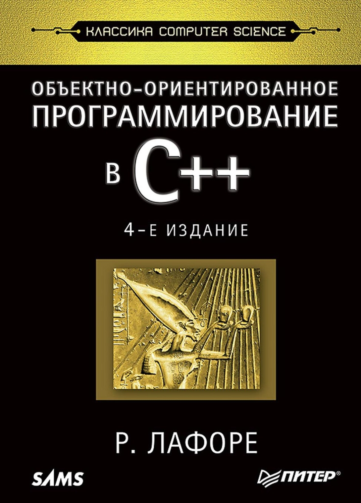

Урок 12: Векторы
Вектор в C++ — это замена стандартному динамическому массиву, память для которого выделяется вручную, с помощью оператора new.
Разработчики языка рекомендуют в использовать именно vector вместо ручного выделения памяти для массива. Это позволяет избежать утечек памяти и облегчает работу программисту.
#include <iostream>
#include <vector>
int main()
{
// Вектор из 10 элементов типа int
std::vector v1(10);
// Вектор из элементов типа float
// С неопределенным размером
std::vector v2;
// Вектор, состоящий из 10 элементов типа int
// По умолчанию все элементы заполняются нулями
std::vector v3(10, 0);
return 0;
} Создадим вектор, в котором будет содержаться произвольное количество фамилий студентов.
#include <iostream>
#include <vector>
#include <string>
int main()
{
// Поддержка кириллицы в консоли Windows
setlocale(LC_ALL, "");
// Создание вектора из строк
std::vector students;
// Буфер для ввода фамилии студента
std::string buffer = "";
std::cout << "Вводите фамилии студентов. "
<< "По окончание ввода введите пустую строку" << std::endl;
do {
std::getline(std::cin, buffer);
if (buffer.size() > 0) {
// Добавление элемента в конец вектора
students.push_back(buffer);
}
} while (buffer != "");
// Сохраняем количество элементов вектора
unsigned int vector_size = students.size();
// Вывод заполненного вектора на экран
std::cout << "Ваш вектор." << std::endl;
for (int i = 0; i < vector_size; i++) {
std::cout << students[i] << std::endl;
}
return 0;
} Запустите программу и проверьте, как она работает.
Для добавления нового элемента в конец вектора используется метод push_back(). Количество элементов определяется методом size(). Для доступа к элементам вектора можно использовать квадратные скобки [], также, как и для обычных массивов.
- pop_back() — удалить последний элемент
- clear() — удалить все элементы вектора
- empty() — проверить вектор на пустоту
Вероятно, это был последний урок на этом сайте.
Но если вы заинтерисовались языком C++ и хотите продолжать обучение дальше, то мы рекомендуем прочитать книгу Роберта Лафоре "Объектно-ориентированное программирование в C++". Очень полезная книга, если вы собираетесь делать какие-то проекты в C++, а тем более станете разработчиком C++, то эта книга обязательно должна быть у вас в библиотеке, т.к. информацию по многим специфичным вещам в интернете найти очень тяжело.
